You now have:
Looking for more Web App layouts? Check out our layouts collection. You can also preview them live.
This is another card.
License
Everything in this repo is BSD style license unless otherwise specified.
Copyright (c) 2015 The Polymer Authors. All rights reserved.
Redistribution and use in source and binary forms, with or without modification, are permitted provided that the following conditions are met:
- Redistributions of source code must retain the above copyright notice, this list of conditions and the following disclaimer.
- Redistributions in binary form must reproduce the above copyright notice, this list of conditions and the following disclaimer in the documentation and/or other materials provided with the distribution.
- Neither the name of Google Inc. nor the names of its contributors may be used to endorse or promote products derived from this software without specific prior written permission.
THIS SOFTWARE IS PROVIDED BY THE COPYRIGHT HOLDERS AND CONTRIBUTORS "AS IS" AND ANY EXPRESS OR IMPLIED WARRANTIES, INCLUDING, BUT NOT LIMITED TO, THE IMPLIED WARRANTIES OF MERCHANTABILITY AND FITNESS FOR A PARTICULAR PURPOSE ARE DISCLAIMED. IN NO EVENT SHALL THE COPYRIGHT OWNER OR CONTRIBUTORS BE LIABLE FOR ANY DIRECT, INDIRECT, INCIDENTAL, SPECIAL, EXEMPLARY, OR CONSEQUENTIAL DAMAGES (INCLUDING, BUT NOT LIMITED TO, PROCUREMENT OF SUBSTITUTE GOODS OR SERVICES; LOSS OF USE, DATA, OR PROFITS; OR BUSINESS INTERRUPTION) HOWEVER CAUSED AND ON ANY THEORY OF LIABILITY, WHETHER IN CONTRACT, STRICT LIABILITY, OR TORT (INCLUDING NEGLIGENCE OR OTHERWISE) ARISING IN ANY WAY OUT OF THE USE OF THIS SOFTWARE, EVEN IF ADVISED OF THE POSSIBILITY OF SUCH DAMAGE.
Users
This is the users section
Resume file
Seongmo Kang
Objective
I am looking to join an Image Processing Software Engineer. I am self-motivated, self-start person and I have strong commitment to task. I adapt well in the fast-paced collaborative environment. I am a team-oriented, self-driven person with a keen technical mind and an eye for detail.
Summary
- A lot of experience in C programming development.
- Strong background in signal, image and video processing.
- Strong understanding of image processing algorithms and camera image signal processing chain.
- Excellent communication, interpersonal and problem solving skill.
- In depth understanding of Java design patterns like Data Access Object, MVC and Singleton.*
- Experience designing embedded systems and knowledge of various communication protocols (I2C, SPI, UART)*
- Quick learner with ability to implement new skills in a short period of time
- Experience with schematic capture and PCB layout*
Technical Skills
Work Experience
- Ziontech Inc.
- Kookmin Univ.
- Designing filter in order to remove MR sounds with using Matlab.
- Kookmin Univ.
- Analyzing License Plate program using Raspberry Pi, Pi_Cam, Linux, OpenCV
- Getting Popularity Award in Capstone Design Contest.
Education
Kookmin University (2011-2017) Bachelor of Electronical EngineeringArmy
Signal Corpsman (March 2012 – December 2013)
Repubilc of Korea KangWondo
- Signal Support Systems Specialist.
- Human Resources Specialist.
Contact
This is the contact section
-Matlab을 통한 MR제거 구현-
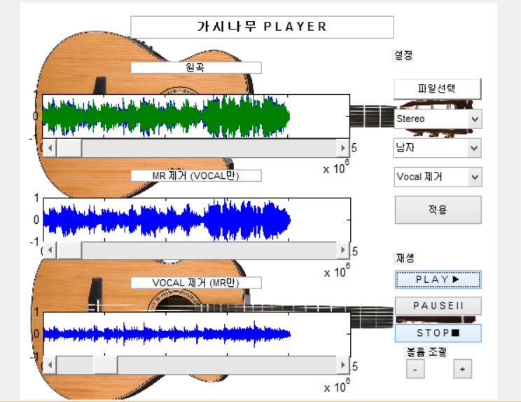
1. 설계 목표
2. MATLAB Filter 설계
1) 윤하 – 빗소리(mono).wav
2) 윤하 – 빗소리(stereo).wav
3) 신승훈 – I Believe(mono).wav
4) 신승훈 – I Believe(stereo).wav
20113054 강성모
20113102 김준엽
20113103 김진혁
20113138 송승훈
20113239 한승오
1.설계 목표
2015년 2학기 DSP 설계 과제는 윤하-빗소리의(mono)와 (stereo) 방식 그리고 신승훈-I Believe (mono)와 (stereo) 방식을 수업시간에 배운 Filter와 spec으로 목소리만 뽑아내는 것이 목표입니다. 결과보고서는 여러 가지 Filter와 spec으로 결과를 도출하기까지의 과정과
최종결과를 보일 것입니다..
2. MATLAB Filter 설계
Filter을 설계하는 것은 fdatool을 써서 여러 가지 filter을 구현했다. 그리고 spec을 정하는 것은 사람과 어쿠스틱 기타, 피아노의 주파수 대역별로 특징을 살펴보고 spec을 만들었다.
실제로 음원에서 아래의 주파수를 참고하여 filtering을 거쳤을 때 강조되는 부분을 확인하고 filter을 만들었다.
주파수 특성:
사람 : 40Hz~440Hz를 강조하면 목소리의 풍부함이 강조된다.1KHz~2.5KHz를 강조하면 명료함이 생긴다. 4KHz~5KHz를 강조하면 목소리가 탁트이듯이 강조된다.
알토(여자의
낮은 목소리)
174.6 ~ 698.5 Hz 소프라노(여자의
높은 목소리)246.9
~ 1,174.7 Hz
Acustic
Guitar :
220~260Hz에
풍부함.1.6KHz~5KHz는
선명도가 생긴다.
Piano : 풍부함은 65㎐ - 130㎐. 선명도와 명확함은 2㎑ - 5㎑ 이다.
출처:http://blog.naver.com/rladhrxo62/80011613005
1)윤하 – 빗소리(mono).wav
우선, Matlab에서 audioread로 ‘윤하 – 빗소리(mono).wav’ 파일을 읽어들이고 그 파일을 frequency 대역으로 바꾸기 위해서 Matlab에서 제공하는 DFT의 일종인 FFT를 이용하여 stem으로 아래의 그림을 살펴보았다..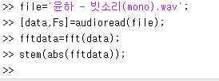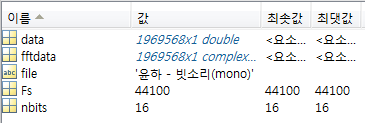
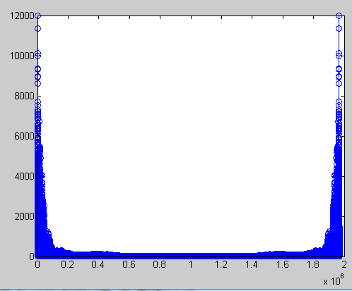
FFT의 결과로 Fs가 음악의 대표 Sampling frequency로 44100[단위]가 나왔다. 그리고 stem으로 본 그림에서 가로축 은 fftdata의 값이 1969568개의 샘플 링된 값이다.
왼쪽의 그림을 보았을 때 대부분의 주파수가 Low frequency 지역에 모여있는 것을 알 수 있었다.(두 부분으로 나뉘는 것은 frequency가 0이후의 부분이 윗 부분으로 올라간 것이다.)
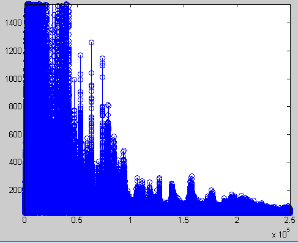
그림을 확대해보면 샘플링된 값들이 각각의DB을 가지고 있는 것을 알 수 있었다. 50000개의 샘플링 밑으로의 값이 큰 DB를 가지고 있었고 윤하의 높은 노래 목소리 는 소프라노라고 생각했을 때 246.9 ~ 1,174.7 Hz의 주 파수 대역을 가질 것으로 예상해서 Low pass Filter를 구성했다. 실제로 수식을 써서 주파수를 아래와 같이 찾 아보았을 때 밑의 샘플링 갯수로는 1119Hz가 나왔다.
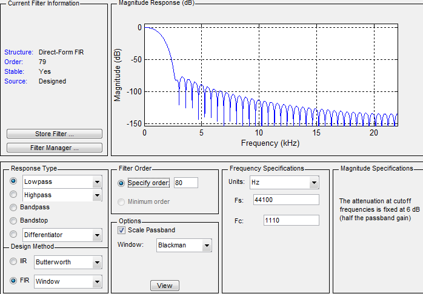
1119Hz를 기준으로 Low pass
filter를 설계해보았다. fdatool이라는 Matlab에서 제공하는 tool을 이용하였다. 그리고 세로축을 보면 낮은 샘플링에서 10000의 값을 가지기 때문에 데시벨을 구했을 때 20log(100000) = 80DB가 나와서
As[Stop band attenuition]을 80까지 가능한 Blackman을 window로 결정했다.
|
SPEC |
Filter |
Window |
Order |
Fs |
Fc |
|
Low Pass |
Blackman |
80 |
44100Hz |
1110Hz |
fdatool의 결과값을 Num으로 export한 것과 처음에 audioread해서 받아온 data를 filtering해서 stem해보고 sound로 들어보았다. 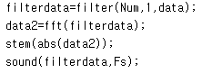
음원
결과 :
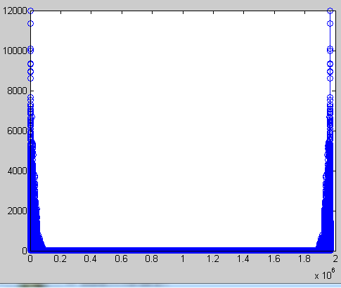
처음 원본을 fft한 결과보다 각각의 값들이 가지는 세로축의 DB을 의미하는 값들이 떨어진 것을 확인할 수 있다.
하지만 실제로 sound로 들어보면 뒤에 기타소리와 피아노 소리가 남아있었다.
대안 : ①As를 낮춰서 hamming을 선택하여 좀 더 날카롭게 떨어지는 filter을 만들기로 하였다 DB
②Band pass filter를 사용하기로 하였다.
-사람의 목소리의 명료함을 살릴 수 있는 1KHz~2.5KHz와 소프라노246.9 ~ 1,174.7 Hz의 겹치는 부분인 500Hz~1.2KHz를 살리기로 했다. 하지만 Acustic기타와 piano소리의 선명도가 살아나는 1.6KHz이상 대역은 살리지 않기로했다.
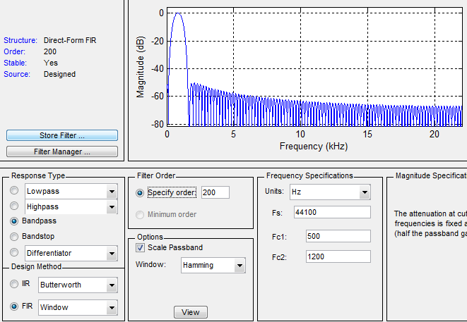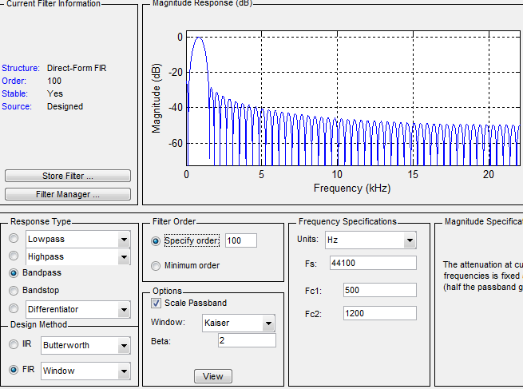
|
SPEC |
Filter |
Window |
Order |
Fc1 |
Fc2 |
|
|
Bandpass |
kaiser |
100 |
500Hz |
1200Hz |
2 |
500hz에서 1200hz의 Fc를 가지는 bandpass를 만드려면 차수가 200까지 높아지고 효과도 없어 kasier filter로 값을 조절하여 만들기로 하였다.
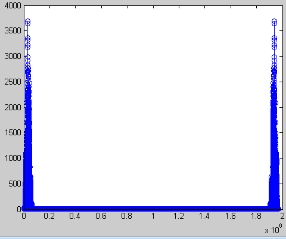
결과 : fft한 결과를 보았을 때 밴드 pass의 모양으로 샘플링된 값들이 DB를 가지고 있는 것을 볼 수 있다. 그런데 실제로 차수의 한계와 의 조정 가지고는 위의 fdatool사진처럼 내가 원하는 부분만 통과시키는 pass band filter을 만들기는 어려웠다.
대안 : 음원중에 피아노 소리와 기타소리만 나는 부분(빗소리 끝에 3초 구간)을 Gold Wave로 추출해내어서 fft를 해본 다음 가장 큰 DB를 가지는 주파수 대역을 알아내고 원본 파일에서 그 부분을 제거 시키는 방법이었다.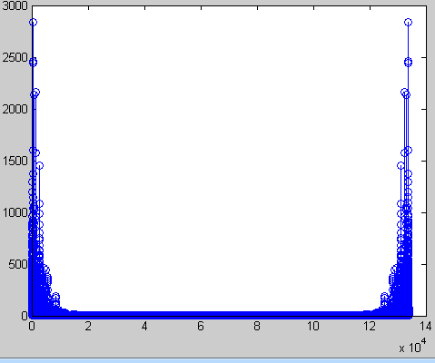
오른쪽의 두 그림은 ‘윤하 – 빗소리(mono).wav’파일의 끝 3초를 추출하여 fft한 그림과 확대해본 그림이다. 샘플의 갯수가 133913개 .
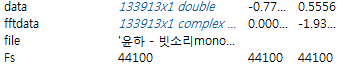
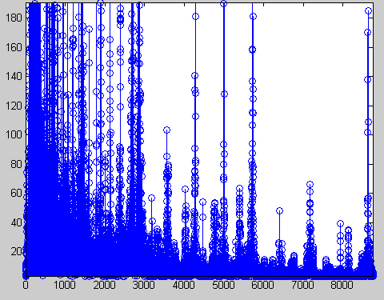
의 계산을 해보았을 때 3000번 째 샘플링은 987Hz를 가지는 것을 알 수 있었다. 그리고 세로축의 값은 DB로 20log(3000)=69DB이 나왔다. 따라서 윈도우는 Blackman 그리고 Ws=1KHz Wp=1.6KHz를 가지도록 Bandpass filter을 만들었다.
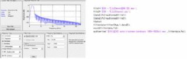
|
SPEC |
Filter |
Window |
Order |
Fs |
Fc1 |
Fc2 |
|
bandpass |
Blackman |
200 |
44100Hz |
1000Hz |
1600 |
음원(더블플릭시 재생)
결과 : 차수가 너무 높은 것과 실제 sound로 들어봤을 때 웅웅거리고 목소리가 탁트이는 소리가 없다. 그리고 피아노와 기타 소리도 많이 사라지지는 않았다.
대안 : 피아노와 기타 , 목소리의 주파수별로 특징 중 MR 제거에 방해되는 부분을 Notching flter 여러번 사용하여 없애고 최적의 결과물을 만들겠다.
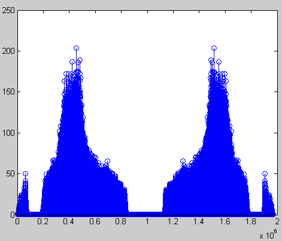
stopband로 최대한 목소리의 영역을 살릴 수 있는 1000Hz이하와 4000Hz를 살리고 notching을 써서 기타와 피아노의 주요주파수대역인 65Hz~260Hz를 제거했다.
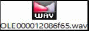
음원(더블플릭시 재생)
|
SPEC |
Filter |
Window |
Order |
Fs |
Fc1 |
Fc2 |
notching point,width |
|
stop band,notching |
kasier |
200 |
44100Hz |
1000Hz |
5000Hz |
160Hz,100Hz |
결과 : 실제 notching은 원하는 주파수를 설정해도 딱 그 부분만 제거되지 못했다. 실제로 260Hz까지 제거 되어야하는 데 700Hz까지 DB가 떨어졌다.그리고 kasier의 minimum order을 쓰니깐 차수가 1000단위로 커졌다.
대안 : 차수에 장점이 있어서 정확한 filter 모양을 만들 수 있는 IIR filter의 Elliptic을 써서 원하는 부분만 제거하겠다.
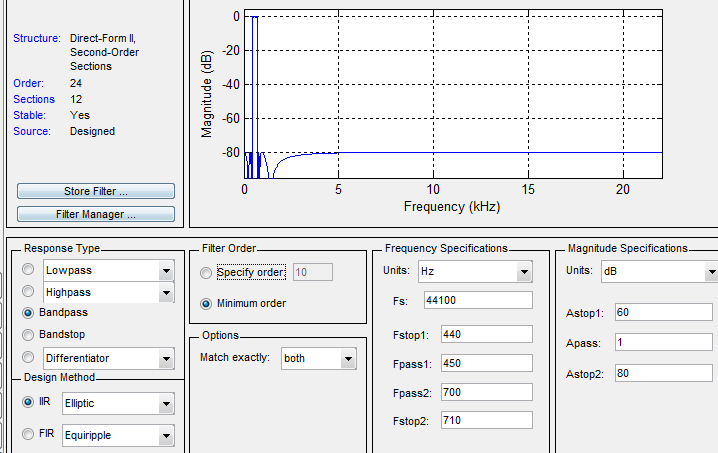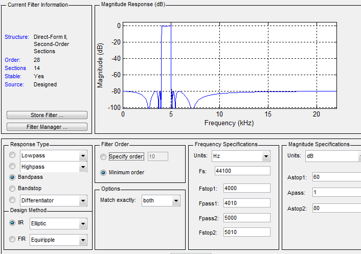
IIR filter의 Elliptic으로 440~700Hz 부분과 사람의 목소리가 강조되는 4000~5000Hz 부분을 band pass로 살려서 합쳤다.
|
SPEC |
IIR Filter |
bandpass 1 |
bandpass 2 |
Fs |
|
Elliptic |
Fpass1:450 Fpass2:700 |
Fpass2:4000 Fpass2:5000 |
44100Hz |
Vocal(더블플릭시 재생)
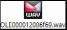
결과 : 확실히 차수에 정확한 filter가 설계되는 IIR filter와 에러부분이 일정한 Elliptic을 썻더니 목소리가 조금 웅웅거리는 점이 있어도 피아노와 기타소리가 많이 제거된 결과를 도출할 수 있었 다.
추가적으로 Vocal을 제거한 MR음원만 재생되도록 필터를 구현 해 보았다.
===============================================================
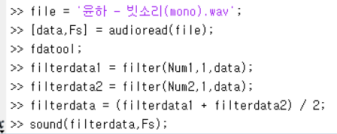
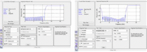
|
|
Window |
Filter |
order |
Fc |
|
SPEC |
hamming |
highpass |
80 |
12000 |
|
hamming |
bandstop |
80 |
fc1 : 100 fc2 : 15000 |
-vocal file-
Mr(더블플릭시 재생)
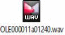
2)윤하 – 빗소리(stereo).wav
음원 파일의 stereo version은 왼쪽과 오른쪽의 데이터로 나온다. 실제 엑셀로 값을 확인해 보면 1열과 2열에 값이 나눠져들어가 있다. 그리고 Vocal은 같은 위상으로 저장되고 MR부분은 반대 위상으로 저장되어있다.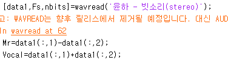
따라서 Mr은 2열에 반대위상으로 저장되어있기 때문에 data1(:,1) - data(:,2);로 빼서 만든다면 2배 증폭된 Mr을 기대할수 있다.
그리고 Vocal은 2열에 동일위상으로 저장되어있기 때문에 data1(:,1) + data(:,2);로 더해서 만든다면 2배 증폭된 Vocal파일을 기대할 수 있다.
실제로 들어보았을 때 Mr은 기타소리가 완벽히 제거되지는 않았지만 괜찮은 음질이었다. 하지만 Vocal file은 생각보다 목소리 뒤에 악기소리가 사라지지않고 악기와 목소리가 같이 증폭된 file이었다.
따라서 우리는 mono필터링에 적용된 IIR 필터를 한번 더 적용 하였다.
|
SPEC |
IIR Filter |
bandpass 1 |
bandpass 2 |
Fs |
|
Elliptic |
Fpass1:450 Fpass2:700 |
Fpass2:4000 Fpass2:5000 |
44100Hz |
-Vocal file- -Mr file-
MR (더블플릭시 재생)
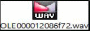
vocal (더블플릭시 재생)
위의 과정을 전부 걸치면 Vocalfile(Mono)와 Mrfile(Mono)가 나올 것이다.
그리고 더 세부적으로 filtering을 해야할 경우에는 처음 ‘윤하 – 빗소리(mono)’를 filtering한 것처럼
여러 가지 filter와 SPEC으로 설계하여 만들 수 있다.
3)신승훈 – I Believe(mono).wav
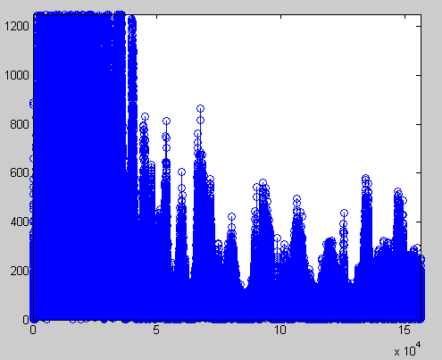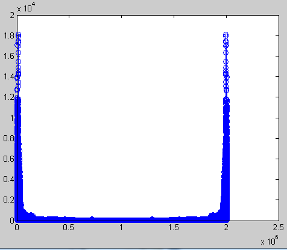
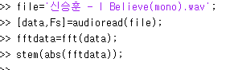
신승훈과 윤하의 음원 차이점은 남자와 여자의 목소리 주파
수에 있다. data를 stem해서 본 결과 낮은 frequency에서 확실히 많은 양의 DB를 가지는 것을 볼 수 있다. 신승훈의 목소리가 바리톤의 주파수 대역이라고 봤을 때 98Hz에서 700Hz까지의 대역을 가질 것으로 예측할 수 있다.
노래를 부르고 있는 상황이라면 1옥타브 증가. 즉 주파수는 대략 2배가 된다고 한다.
*참고:바리톤 98 ~ 392 Hz 테너 130.81~ 493.9 Hz 알토 174.6 ~ 698.5 Hz 소프라노 246.9 ~ 1,174.7 Hz
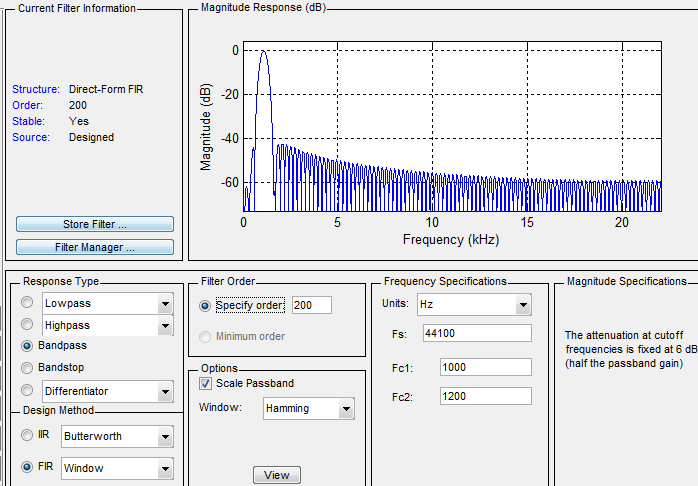
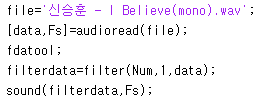
FIR filter의 차수를 고려하고 노래 부르는 상황이라 옥타브가 1개 증가하였다고 감안하였을 때 200Hz~1200Hz를 범위로 예측할 수 있다. 그리고 남자의 평소 목소리 주파수는 보통 200Hz 안쪽이므로 기타소리와 겹쳐서 생각하지 않았다. Fc1을 1000Hz로 잡은 이유는 Band pass를 따로하여 400~1000Hz를 해 본 결과 잘들리지않는 하이톤의 목소리만 나왔기 때문에 과감히 제거하였다.
|
SPEC |
Filter |
Window |
Order |
Fc1 |
Fc2 |
|
Bandpass |
Hamming |
200 |
1000Hz |
1200Hz |
Vocal (더블플릭시 재생)
결과 : 꼭 IIR filter을 쓰지않고도 FIR filter의 Hamming으로도 상당히 많은 기타 소리가 제거된 결과를 얻어낼 수 있었다.
추가적으로 Vocal을 제거한 MR음원만 재생되도록 필터를 구현 해 보았다.
===============================================================
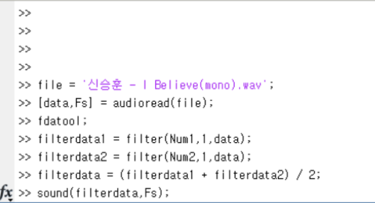
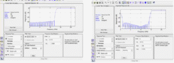
|
|
Window |
Filter |
order |
Fc |
|
SPEC |
hamming |
highpass |
80 |
13000 |
|
hamming |
bandstop |
80 |
fc1 : 100 fc2 : 15000 |
-Mr file-
MR (더블플릭시 재생)
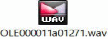
4) 신승훈 – I Believe(stereo).wav
신승훈 음원 파일도 윤하 stereo 음원파일과 마찬가지로 왼쪽과 오른쪽의 데이터로 나온다. 실제 엑셀로 값을 확인해 보면 1열과 2열에 값이 나눠져 들어가 있다. 그리고 Vocal은 같은 위상으로 저장되고 MR부분은 반대 위상으로 저장되어있다.
따라서 Mr은 2열에 반대위상으로 저장되어있기 때문에 data1(:,1) - data(:,2);로 빼서 만든다면 2배 증폭된 Mr을 기대할 수 있다.
그리고 Vocal은 2열에 동일위상으로 저장되어있기 때문에 data1(:,1) + data(:,2);로 더해서 만든다면 2배 증폭된 Vocal파일을 기대할 수 있다.
실제로 들어보았을 때 Mr은 기타소리가 완벽히 제거되지는 않았지만 괜찮은 음질이었다.
반면 Vocal file은 생각보다 목소리 뒤에 악기소리가 사라지지 않고 악기와 목소리가 같이 증폭된 file이었다. Vocal File 파형을 분석 해 본 결과 stereo 파형이 mono파형으로 바뀐 것을 알 수 있었다. 따라서 mono 필터에 적영 한 것처럼 hamming필터를 한번더 거쳤다.
|
SPEC |
Filter |
Window |
Order |
Fc1 |
Fc2 |
|
Bandpass |
Hamming |
80 |
1000Hz |
1200Hz |
이렇게 SPEC을 설정하고, 필터링 하였다.
-Vocal file- -Mr file-
Vocal (더블플릭시 재생)
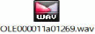 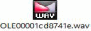
MR (더블플릭시 재생)
위의 과정을 전부 걸치면 Vocalfile(Mono)와 Mrfile(Mono)가 나올 것이다. 그리고 더 세부적으로 filtering을 해야할 경우에는 처음 ‘신승훈 – I Believe (mono)’를 filtering한 것처럼
여러 가지 filter와 SPEC으로 설계하여 만들 수 있다.